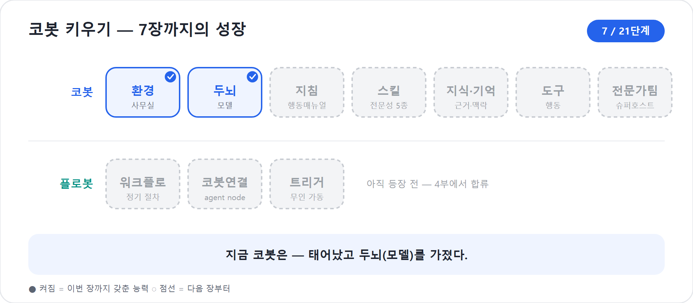

7장. 자연어로 코봇이 태어난다 — 출생신고와 두뇌 고르기
사무실이 정해졌으니, 이제 신입을 채용할 차례다. 예전 같으면 코봇을 만든다는 말은 곧 토픽을 짜고 노드를 잇는 일을 뜻했다. 클래식에서는 사용자의 말이 어떤 토픽을 깨우고, 어떤 노드로 흘러가고, 어느 조건에서 갈라질지를 그려야 했다. 신버전에서는 출발점이 달라졌다. 코봇은 먼저 설명으로 태어난다.
이 장은 두 가지 일을 한다. 첫째, 새 에이전트 경험에서 자연어 설명으로 코봇의 초안을 만드는 흐름을 따라간다. 둘째, Build 표면의 Model 구성요소에서 코봇의 두뇌를 고르는 법을 배운다. 여기서 특히 중요한 것은 비용에 대한 오해를 바로잡는 일이다. 모델 셀렉터를 바꾸는 행위 자체가 곧바로 청구서를 바꾸는 스위치는 아니다. 비용은 사용량, Copilot Credits, 그리고 워크플로 실행 용량의 문제다. 모델은 먼저 품질과 지연, 업무 적합성의 문제로 보아야 한다.
2026년 기준 주의
이 장은 Microsoft Learn의 새 에이전트 경험 개요, 클래식 비교 문서, 모델 선택 문서를 기준으로 한다. 모델 목록·지역 가용성·미리보기 여부는 빠르게 바뀐다. 특정 모델 이름은 예시로만 읽고, 실제 운영 전에는 현재 테넌트와 환경에서 보이는 Model 목록과 관리자 설정을 확인해야 한다.
설명 한 장으로 시작한다
새 에이전트를 만들 때 우리가 먼저 하는 일은, “이 코봇이 무엇을 하는 친구인지”를 평범한 말로 적는 것이다. Microsoft Learn은 새 경험을 자연어 우선 접근이라고 설명한다. 명시적인 토픽, 흐름, 분기 논리를 먼저 그리는 대신, 에이전트의 목적과 행동을 자연어로 설명하면 시스템이 그 아래 구성을 생성한다.
예를 들어 이렇게 쓸 수 있다.
“사내 프로젝트 운영을 돕는 PM 에이전트를 만들고 싶습니다. 사용자가 새 프로젝트를 시작하면 목표와 범위, 이해관계자, 일정, 예산, 리스크, 보고서 초안을 차례로 정리하도록 도와주세요. 모르는 정보는 추측하지 말고 질문하세요.”
이 설명은 완성된 지침이 아니다. 채용 면접에서 “어떤 사람을 뽑고 싶은가”를 말하는 첫 문장에 가깝다. Copilot Studio는 이 문장을 바탕으로 코봇의 초기 구성을 잡아준다. 이름, 설명, 지침의 초안, 기본 구성요소가 생기고, 우리는 Build 탭으로 들어가 그것을 다듬는다.
공개 데모에서도 새 경험의 첫 화면은 간명했다. 에이전트 이름을 쓰고, 자세한 지침을 입력하고, 오른쪽에서 모델을 고르고, 구성요소를 붙인다. 화면 상단에는 Build · Preview · Evaluate · Monitor가 보인다. 이 네 탭은 앞으로 우리가 코봇을 키우는 순서이기도 하다.
| 단계 | 무엇을 하는가 | 이 책에서 깊게 다루는 곳 |
|---|---|---|
| Create | 자연어로 목적을 설명하고 에이전트 초안을 만든다 | 7장 |
| Build | 지침, 지식, 도구와 스킬, 모델, 연결된 에이전트를 구성한다 | 7~12장 |
| Preview | 대화로 실제 행동을 확인한다 | 16장 |
| Evaluate | 테스트 세트로 품질을 측정한다 | 18장 |
| Monitor | 활동과 사용을 살핀다 | 20장 |
| Publish | 채널에 내보낸다 | 19장 |
여기서 “자연어로 만든다”는 말을 너무 낭만적으로 받아들이면 안 된다. 자연어는 시작을 쉽게 해주는 문이다. 좋은 코봇은 그 문을 지나 Build에서 다듬어진다. 8장에서는 지침을, 9장에서는 Skill을, 10장에서는 지식과 기억을, 11장에서는 도구를 붙인다. 12장에서는 코봇이 전문가 에이전트를 거느리는 슈퍼호스트가 된다.
코봇 한마디
"저는 자연어 설명 한 장으로 태어나지만, 그건 입사 첫날의 초안일 뿐이에요. Build에서 지침·지식·스킬·도구를 붙여 주실수록 진짜 동료가 됩니다!"
새 경험의 기본기: 오케스트레이션은 꺼지지 않는다
태어나는 순간 코봇은 빈손이 아니다. 신버전은 향상된 오케스트레이션(orchestration)을 모든 에이전트에 적용한다. 오케스트레이션이란 코봇이 사용자의 요청을 보고, 지금 어떤 지침을 따라야 하는지, 어떤 지식과 도구와 스킬을 꺼내야 하는지 판단하는 중심 골격이다.
클래식에서는 오케스트레이션 방식이 설정의 문제였다. 토픽 트리거와 명시적 대화 설계를 중심으로 할 수도 있고, 생성형 오케스트레이션을 켜는 방식도 있었다. 새 경험에서는 다르다. Microsoft Learn은 새 경험의 모든 에이전트가 향상된 오케스트레이션 런타임을 사용하며, 클래식처럼 오케스트레이션을 선택하는 옵션이 없다고 설명한다.
이 차이는 실무에서 크다. 코봇에게 “워크숍 프로젝트 시작해줘”라고 말하면, 코봇은 단순히 한 토픽을 찾는 것이 아니라 요청의 목적을 해석하고, 지침을 확인하고, 필요한 구성요소를 골라 다음 행동을 정한다. 물론 그렇다고 모든 일이 자동으로 완벽해지는 것은 아니다. 오케스트레이션은 엔진이고, 좋은 지침과 Skill은 운전법이다. 엔진이 좋아도 운전법이 흐리면 엉뚱한 길로 갈 수 있다.
비유
모델은 코봇의 두뇌, 지침은 행동매뉴얼, Skill은 업무별 매뉴얼, 도구는 손발이다. 오케스트레이션은 이 모든 것을 “지금 어떤 순서로 쓸지” 판단하는 작업반장에 가깝다.
출생신고 — 한 번 정하면 못 바꾸는 것
설명으로 코봇의 윤곽을 잡았다면, 첫 저장은 출생신고에 가깝다. 이름과 아이콘 같은 Agent details를 정하고 저장하는 순간 코봇은 정식으로 등록된다. 여기서 한 가지를 반드시 짚어야 한다. 표시 이름은 나중에 고칠 수 있지만, 내부 식별자나 솔루션 구성요소 이름처럼 시스템이 쓰는 이름은 처음 결정 뒤 바꾸기 어렵거나 사실상 고정되는 경우가 있다. 사람으로 치면 사번과 같다.
입문자는 “화면에 보이는 이름만 바꾸면 되지 않나”라고 생각하기 쉽다.
그러나 운영으로 가면 이름은 검색, 솔루션, ALM, 감사 로그, 관리자
보고서에 남는다. 새 에이전트, 테스트봇,
PM봇최종진짜최종 같은 이름은 데모에서는 웃고 넘길 수
있지만, 운영에서는 빚이 된다.
권장하는 출생신고 기준은 다음과 같다.
| 항목 | 좋은 예 | 피할 예 |
|---|---|---|
| 표시 이름 | 프로젝트 운영 코봇 | 테스트봇, 새 에이전트 |
| 내부/솔루션 이름 | ProjectOpsCobot |
bot1, final_test |
| 설명 | 사내 프로젝트 기획·일정·예산·리스크·보고 초안을 지원 | 프로젝트 도우미 |
| 아이콘 | 팀 표준 또는 업무를 떠올리게 하는 단순 아이콘 | 의미 없는 임시 이미지 |
이름은 문학이 아니라 운영 정보다. 누가 봐도 “무슨 일을 하는 코봇인지”와 “어느 팀이 관리하는지”가 드러나는 편이 좋다. 표시 이름을 한국어로 쓰더라도 내부 이름은 영문·숫자 조합으로 단정하게 맞추는 조직이 많다.
팁
운영 후보라면 이름을 정하기 전에 21장에서 다룰 ALM과 관리 표준을 떠올려라. 환경 이름, 솔루션 이름, 에이전트 이름이 서로 어울리면 나중에 Monitor와 거버넌스 보고서에서 훨씬 찾기 쉽다.
모델, 코봇의 두뇌를 고른다
코봇이 등록되면 이제 어떤 두뇌를 줄지 고른다. 새 경험의 Build 또는 Overview 표면에는 Model 구성요소가 있고, 여기서 에이전트의 주 모델을 선택한다. Microsoft Learn은 Copilot Studio에서 드롭다운 메뉴로 에이전트 오케스트레이션에 가장 적합한 모델을 고를 수 있다고 설명한다.
모델은 대체로 사용 목적에 따라 나뉜다. 2026년 문서 기준으로 모델에는 General, Deep, Auto 같은 태그가 붙을 수 있다. 실제 목록은 지역, 관리자 설정, 미리보기 허용 여부에 따라 달라진다.
| 태그 | 어울리는 일 | 응답 지연 | 사용량 경향 | 조심할 점 |
|---|---|---|---|---|
| General | 요약, 초안 작성, 번역, FAQ형 답변, 가벼운 자동화 | 빠름 | 낮음 | 복잡한 다단계 추론에서는 얕을 수 있다 |
| Deep | 정책·계약 검토, 복잡한 분석, 다단계 문제 해결, 긴 문서 종합 | 느림 | 높음(긴 추론·도구 호출) | 미리보기 제약이 있을 수 있다 |
| Auto | 난이도가 섞이는 헬프데스크·직원 지원 | 변동 | 변동 | 지연과 사용량이 예측보다 출렁일 수 있다 |
사용량 경향이 높을수록 같은 대화라도 더 많은 Copilot Credits를 쓸 수 있다. 다만 이것은 모델을 고르는 행위가 아니라 그 모델을 실제로 더 많이·더 길게 쓰는 데서 나오는 비용이다. 비용의 실제 메커니즘은 21장에서 다룬다.
우리 코봇은 프로젝트 운영 PM이다. 처음부터 가장 무거운 모델을 고집할 필요는 없다. 기본 모델로 시작해 대표 업무를 테스트한다. “사내 워크숍 기획서 초안”, “일정표 작성”, “예산안 원화 표기”, “리스크 레지스터”처럼 실제 질문을 던져 본다. 결과가 얕거나 리스크 판단이 부실하면 더 깊은 모델을 실험한다. 반대로 단순 요약과 안내가 대부분인데 응답이 느리면 일반 모델로도 충분한지 확인한다.
모델 선택은 느낌으로 끝내지 않는다. 같은 지침, 같은 지식, 같은 Skill을 둔 상태에서 모델만 바꿔 Preview와 Evaluate를 반복한다. 품질 차이를 보려면 질문도 같아야 한다. 18장에서 테스트 세트를 만들 때 이 원칙을 다시 쓴다.
"제 두뇌는 이름값보다 업무 기준으로 골라 주세요. 같은 질문을 던져 보고, 제가 더 정확하고 빠르게 일하는지 Preview와 Evaluate로 확인하는 게 정답이에요!"
미리보기 모델과 외부 모델은 신중히
모델 목록에는 GA, Preview, Experimental(상태: 정식/미리보기/실험), Default, Retired, Cross-geo 같은 표시가 붙을 수 있다. 이것은 장식이 아니다. 운영 판단에 직접 영향을 준다.
| 표시 | 뜻 | 운영 판단 |
|---|---|---|
| Default | 대부분의 시나리오에 맞춰 기본으로 선택되는 모델 | 처음 시작점으로 좋다 |
| GA | 일반 사용 가능 모델 | 운영 후보로 우선 검토한다 |
| Preview | 정식 출시 전 미리보기 모델 | 실험은 가능하지만 운영에는 신중해야 한다 |
| Experimental | 초기 실험 모델 | 품질·가용성·기능 제약이 있을 수 있어 운영에 권장하지 않는다 |
| Retired | 새 기본 모델로 대체되어 은퇴한 모델 | 일정 기간만 계속 쓸 수 있으므로 전환 계획이 필요하다 |
| Cross-geo | 데이터 처리가 조직의 지리적 경계를 벗어날 수 있음 | 보안·규정 요구가 있는 조직은 관리자 확인이 필요하다 |
Microsoft Learn은 미리보기·실험 모델이 성능, 응답 품질, 지연, 메시지 소비에서 변동을 보일 수 있으며, 운영에는 권장되지 않는다고 안내한다. 또한 실험 모델에서 처리되는 데이터가 조직의 지리적 경계를 벗어나 처리·저장될 수 있음을 주의하라고 한다. 한국 기업에서 개인정보, 금융 정보, 공공 데이터, 계약 정보를 다루는 코봇이라면 이 한 줄이 매우 중요하다.
외부 모델도 있다. 2026년 문서 기준으로 Copilot Studio는 Anthropic, Mistral, xAI 같은 외부 모델을 에이전트의 기본 모델로 선택할 수 있는 경로를 제공하며, 관리자가 환경과 Microsoft 365 관리 센터에서 접근을 허용해야 한다. 외부 모델이 보이지만 선택되지 않거나, 원하는 모델이 목록에 없다면 제작자 문제가 아니라 관리자 설정 문제일 수 있다.
현장에서
“모델 목록이 내 화면과 책이 다르다”는 질문은 정상이다. 모델 가용성은 지역, 환경, 관리자 설정, 미리보기 허용 여부, 외부 모델 정책에 따라 달라진다. 책의 표를 외우기보다, Model 목록의 태그와 운영 의미를 읽는 법을 익혀야 한다.
더 보기 — 모델별 강점과 태그(GA·Preview·Default 등)의 최신 목록은 화면의 Model 트레이와 컴패니언 사이트에서 확인한다. 모델 라인업과 지역 가용성은 자주 바뀌므로, 책의 표는 “읽는 법”을 익히는 용도로만 쓴다.
두뇌를 바꿔도 출생신고가 바뀌지는 않는다
모델을 바꾸는 일은 두뇌 선택이지 코봇의 정체성을 새로 만드는 일이 아니다. 같은 코봇이 조금 다른 두뇌를 쓰는 것이다. 지침, Skill, 지식, 도구가 그대로여도 모델에 따라 답변의 깊이, 속도, 산출물의 정돈 정도가 달라질 수 있다. 그래서 모델 변경 후에는 반드시 Preview와 Evaluate로 다시 검증해야 한다.
공식 문서는 기본 모델이 더 나은 모델이 일반 사용 가능해지면 주기적으로 업그레이드될 수 있고, 이전 기본 모델이 retired 상태가 될 수 있다고 설명한다. 은퇴한 모델은 일정 기간, 문서상 한 달 정도 계속 쓸 수 있는 경로가 제공될 수 있지만 영구 의존 대상으로 보면 안 된다. 운영 코봇이라면 모델 변경은 단순 설정 변경이 아니라 회귀 테스트 대상이다.
검증 질문은 실제 업무에 가까워야 한다.
1. “다음 달 80명 규모 사내 워크숍 프로젝트를 시작해줘.”
2. “예산 상한은 1,500만 원이고 장소는 판교 사옥이야. 일정표를 만들어줘.”
3. “외부 강사 계약 지연 리스크를 등록하고 대응책을 제안해줘.”
4. “임원 보고용 5줄 요약으로 바꿔줘.”모델을 바꾼 뒤 이 네 질문의 결과를 비교한다. 프로젝트 범위를 추측하지 않는가, 원화 금액을 일관되게 표기하는가, 리스크의 가능성과 영향을 구분하는가, 임원 보고 문체가 과장되지 않는가를 본다. 모델이 좋아졌는지 여부는 “멋진 말”이 아니라 “업무 기준을 더 잘 지켰는가”로 판단한다.
두뇌 선택과 비용을 혼동하지 않는다
여기서 가장 흔하고, 가장 비싸게 치르는 오해 하나를 바로잡아야 한다. 많은 이가 “센 모델을 고르면 그 순간 청구서가 늘 것”이라고 짐작한다. 이 책의 비용 캐논은 다르다. 에이전트의 모델 셀렉터를 바꾸는 것 자체는 과금에 영향을 주는 행위가 아니다. 비용은 실제 사용량, 곧 메시지와 활동에 따라 소비되는 Copilot Credits, 그리고 Workflows 실행 액션당 용량 소비에서 발생한다.
물론 모델은 비용과 완전히 무관한 단어가 아니다. 공식 모델 문서도 모델 태그별로 지연과 비용 특성이 다를 수 있다고 설명한다. 또한 미리보기 기능이나 deep reasoning(복잡한 문제 단계별 추론·느림·고비용) 사용은 Copilot Credits 소비와 연결된다. 하지만 7장에서 반드시 지켜야 할 구분은 이것이다.
| 헷갈리는 말 | 정확한 해석 |
|---|---|
| “모델 셀렉터를 바꾸면 바로 과금된다” | 아니다. 선택 자체가 아니라 사용량이 비용을 만든다. |
| “제일 강한 모델은 무조건 금지해야 한다” | 아니다. 품질이 필요한 업무에는 강한 모델을 검토하되 Preview/Evaluate로 근거를 만든다. |
| “비용은 모델 이름만 보면 알 수 있다” | 아니다. 메시지량, deep reasoning 사용, 워크플로 실행, BYOM 여부, 라이선스 조건을 함께 봐야 한다. |
| “클래식의 AI 프롬프트 비용 레버를 신버전에도 그대로 적용하면 된다” | 아니다. 신버전에서는 별도 AI 프롬프트 기능을 현재 기능처럼 설명하지 않는다. skills와 agent node 중심으로 생각한다. |
쉬운 풀이 — BYOM (Bring Your Own Model)
외부(Azure AI 등)에서 직접 가져온 내 AI 모델을 코봇에 끼워 쓰는 방식. 별도 과금 대상이다.
특히 마지막 줄이 중요하다. 클래식이나 다른 Power Platform 표면에서 prompt builder와 모델별 단가 이야기가 나올 수 있다. 그러나 2026년 새 에이전트 경험 본문에서는 이를 현재의 별도 AI 프롬프트 기능처럼 끌어오지 않는다. 신버전에서는 Prompts가 skills 또는 워크플로의 agent node로 대체되는 흐름을 따른다. 따라서 이 책의 7장은 모델 선택 관점에서만 비용을 정리한다. 자세한 거버넌스와 비용 관리는 21장에서 다룬다.
어떤 두뇌를 고를까 — 한눈에
| 이럴 때 | 고르는 모델 | 유의점 |
|---|---|---|
| 일반적인 업무·빠른 응답 | 기본 모델(Default·GA 우선) | 처음 시작점으로 좋다. 같은 지침·지식·Skill을 둔 상태에서 Preview와 Evaluate로 실제 업무 질문을 비교한다. |
| 복잡한 다단계 추론이 필요 | Deep 또는 deep reasoning | 깊은 문제에만 쓴다. 응답이 느리고 Copilot Credits 소비가 커질 수 있으며, 2026년 기준 미리보기·지역·데이터 처리 제한을 확인한다. |
| 난이도가 섞이는 헬프데스크·직원 지원 | Auto | 요청 난이도에 따라 지연과 사용량이 변동될 수 있다. |
| 미리보기·실험 모델을 시험해 보고 싶다 | Preview 또는 Experimental | 실험은 가능하지만 운영에는 신중해야 한다. 품질·가용성·기능 제약과 데이터 위치 조건을 확인한다. |
| 사내 정책상 특정 외부 모델을 써야 한다 | BYOM 또는 외부 모델 | Azure AI Foundry 등에서 가져온 모델은 별도 과금과 관리 조건을 확인한다. 관리자가 환경과 Microsoft 365 관리 센터에서 접근을 허용해야 할 수 있다. |
예를 들어 새 경험에서는 클래식의 별도 AI 프롬프트를 그대로 옮겨 생각하기보다, Prompts를 skills나 워크플로의 agent node로 옮겨 설계한다.
비용 캐논
모델은 품질·지연·업무 적합성의 선택이다. 비용은 사용량/메시지 단위 Copilot Credits와 Workflows 실행 용량에서 관리한다. BYOM, 곧 Azure AI Foundry 등에서 직접 가져온 모델은 별도 과금과 관리 조건을 확인한다.
"두뇌를 고르는 버튼 자체가 계산대는 아니에요. 실제 비용은 제가 얼마나 많이 대화하고, 깊게 추론하고, 플로봇을 얼마나 실행하느냐에서 생깁니다!"
Deep reasoning은 만능 가속기가 아니다
모델 선택 문서와 별도로, Copilot Studio에는 복잡한 작업을 위한 deep reasoning 관련 미리보기 기능이 있다. 공식 문서는 deep reasoning 모델이 논리적 추론, 문제 해결, 단계적 분석이 필요한 작업을 더 정확히 수행하게 도와줄 수 있지만 기본 모델보다 응답 시간이 느릴 수 있다고 설명한다. 또한 2026년 기준 미리보기이며, 지역과 데이터 처리 조건에 제한이 있다.
이 기능을 입문 단계에서 너무 빨리 쓰려고 할 필요는 없다. 중요한 것은 사고방식이다. 모든 문장에 “깊게 생각해”라고 붙이는 것이 능사가 아니다. 리스크 우선순위 선정, 정책 예외 판단, 여러 자료를 종합한 최종 권고처럼 정말 깊은 추론이 필요한 단계에만 쓰는 편이 낫다. 코봇이 매번 깊은 생각에 잠기면 사용자는 기다리다 지친다.
러닝 예제라면 다음처럼 구분할 수 있다.
| 업무 | 일반 모델로 충분한 경우 | 깊은 추론 검토 대상 |
|---|---|---|
| 기획서 초안 | 목표·범위·이해관계자 정리 | 서로 충돌하는 요구를 조정해 우선순위 결정 |
| 일정표 | 작업 분해와 마일스톤 작성 | 여러 팀 제약을 반영해 대안 일정 비교 |
| 예산안 | 항목·수량·단가 표 작성 | 예산 삭감 시 영향도와 절충안 분석 |
| 리스크 | 일반 리스크 목록화 | 발생 가능성·영향·대응 비용을 종합해 핵심 리스크 선정 |
| 보고 | 5줄 요약 | 임원 의사결정용 권고안 작성 |
기억할 문장은 이것이다. 깊은 모델은 깊은 문제에 쓴다. 단순한 안내문까지 전부 깊은 모델에 맡기는 것은 좋은 설계가 아니다.
러닝 예제: 프로젝트 운영 코봇 만들기
이제 6장에서 정한 개발 환경에서 코봇을 만든다고 가정하자. 목적은 사내 워크숍 프로젝트 운영이다. Create 단계에서 다음 설명을 넣는다.
사내 프로젝트 운영을 돕는 PM 에이전트를 만듭니다.
사용자가 새 프로젝트를 시작하면 목표, 범위, 이해관계자, 일정, 예산, 리스크, 보고서 초안을 순서대로 준비하도록 돕습니다.
확실하지 않은 정보는 추측하지 말고 질문합니다.
결과는 한국 업무 문맥에 맞게 원화와 표를 사용해 간결하게 정리합니다.생성 후 Build 탭으로 들어가 다음을 확인한다.
- Instructions에 코봇의 역할과 범위가 초안으로 들어갔는가?
- Model이 기본 모델로 설정되어 있는가?
- Knowledge, Tools and skills, Connected agents는 아직 비워 두거나 최소 상태인가?
- Preview에서 간단한 요청에 코봇이 프로젝트 운영 역할로 답하는가?
이 시점의 코봇은 아직 능숙하지 않다. 지침은 8장에서 다듬고, 프로젝트 기획·일정·예산·리스크·보고 Skill은 9장에서 붙인다. 지식과 기억은 10장, 도구는 11장, 전문가 에이전트 연결은 12장에서 이어진다. 7장의 목표는 완성품이 아니라 출생신고와 두뇌 선택이다.
핵심 정리
| # | 요점 |
|---|---|
| 1 | 새 에이전트 경험에서 코봇은 토픽을 그려서가 아니라 자연어 설명으로 시작한다. |
| 2 | Create는 초안을 만드는 단계이고, Build는 지침·지식·도구와 스킬·모델·연결된 에이전트를 다듬는 단계다. |
| 3 | 새 경험의 모든 에이전트는 향상된 오케스트레이션을 사용한다. 클래식처럼 오케스트레이션을 끄고 켜는 문제가 아니다. |
| 4 | 첫 저장 때의 이름과 내부 식별자는 운영 흔적이 되므로 사번처럼 신중히 정한다. |
| 5 | 모델은 코봇의 두뇌다. 기준은 품질, 추론 깊이, 응답 지연, 업무 적합성이다. |
| 6 | 모델 셀렉터 변경 자체는 과금 스위치가 아니다. 비용은 사용량/메시지 단위 Copilot Credits와 Workflows 실행 용량 중심으로 본다. |
| 7 | 미리보기·실험·외부·cross-geo 모델은 관리자 설정, 데이터 위치, 운영 적합성을 반드시 확인한다. |
자주 묻는 질문(FAQ)
| 질문 | 답변 |
|---|---|
| 자연어 설명만 쓰면 코봇이 완성되나요? | 아니다. 설명은 좋은 출발점이다. 이후 Build에서 지침, Skill, 지식, 도구, 모델을 다듬어야 한다. |
| 모델을 제일 강한 것으로 두면 항상 좋나요? | 아니다. 복잡한 추론에는 유리할 수 있지만 지연이 커질 수 있다. 실제 질문으로 Preview와 Evaluate를 반복해 판단한다. |
| 모델을 바꾸면 청구서가 바로 늘어나나요? | 모델 셀렉터를 바꾸는 행위 자체가 과금 스위치는 아니다. 비용은 실제 사용량과 Copilot Credits, 워크플로 실행 용량으로 관리한다. |
| 미리보기 모델을 운영에 써도 되나요? | 공식 문서는 미리보기·실험 모델을 운영에 권장하지 않는다. 품질·가용성·지연·데이터 위치 제약을 검토해야 한다. |
| BYOM은 어떻게 보아야 하나요? | Azure AI Foundry 등 외부 모델을 가져오는 경우 별도 과금과 관리자 설정, 데이터 처리 조건을 확인해야 한다. 자세한 비용 관리는 21장에서 다룬다. |
| 은퇴한 모델을 계속 쓸 수 있나요? | 공식 문서 기준으로 새 기본 모델 전환 뒤 일정 기간 이전 모델을 계속 쓰는 경로가 제공될 수 있다. 그러나 영구 의존하지 말고 전환 테스트를 준비한다. |
다음 장에서는
이 장에서 코봇은 사무실에 들어와 이름을 얻고 두뇌를 골랐다. 그러나 같은 모델을 얹은 두 코봇이 전혀 다르게 행동하는 이유는 아직 설명하지 않았다. 답은 Instructions, 곧 지침에 있다. 8장에서는 코봇의 정체성과 행동매뉴얼을 어떻게 쓰는지 다룬다. 좋은 지침은 코봇이 무엇을 해야 하는지뿐 아니라, 무엇을 하지 말아야 하는지와 모를 때 어떻게 멈춰야 하는지도 가르친다.
실습 — 코봇 키우기 7단계: 코봇을 태어나게 하고 두뇌를 고른다

〔이어받기〕 6장의 개발 환경 안에서, 설명 한 장으로 코봇을 입사시킨다.
6-a. 설명으로 생성하고 출생신고한다. “여름 신제품 출시 프로젝트를 운영하는 PM 에이전트”라고 적어 생성 → 이름 “코봇”으로 첫 저장. 식별자는 한 번 정하면 못 바꾼다 — 신중히.
6-b. 두뇌(모델)를 고르고 비교한다. 기본 모델로
시작하되, risk-checker처럼 다단계 판단이 얕게
나오면 Deep 계열로 올려 같은 질문의 답이 어떻게 깊어지는지(품질·지연)
비교한다.
6-c. 비용 오해를 바로잡는다. 모델을 바꿔도 과금은 그대로다 — 비용 레버는 모델 셀렉터가 아니라 AI 프롬프트의 모델 호출이다(21장).
〔성장〕 코봇이 태어났고 두뇌(모델) 를 가졌다. 빈 껍데기지만 ‘추론·행동’ 골격은 이미 장착(오케스트레이션 자동). 〔검증 포인트〕 저장된 코봇이 목록에 보이고, 모델을 바꿔 같은 질문의 응답 깊이·속도 차이를 한 번이라도 관찰했으면 통과.